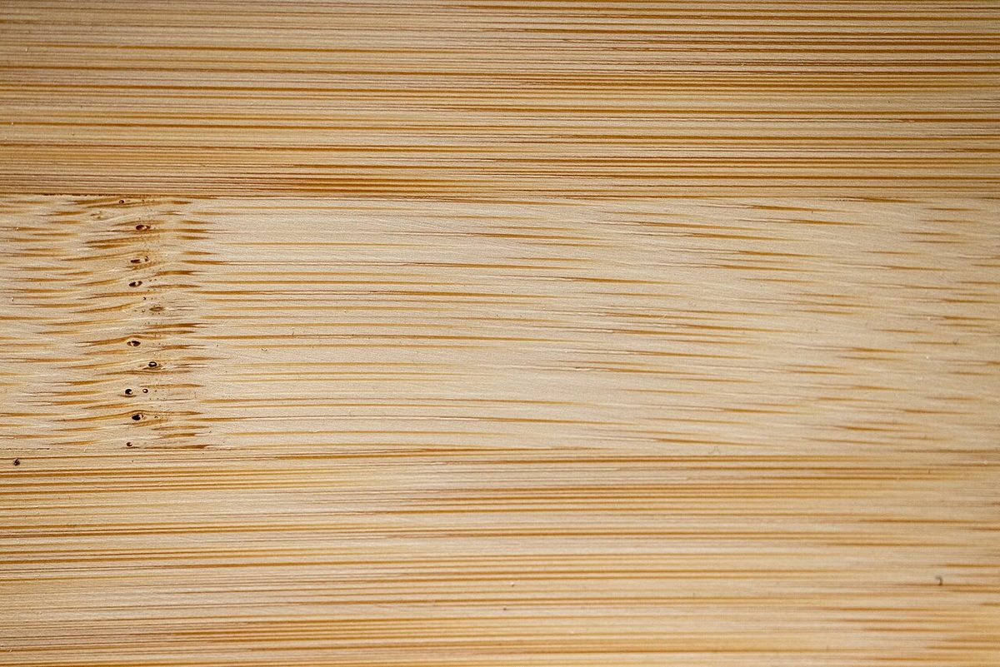
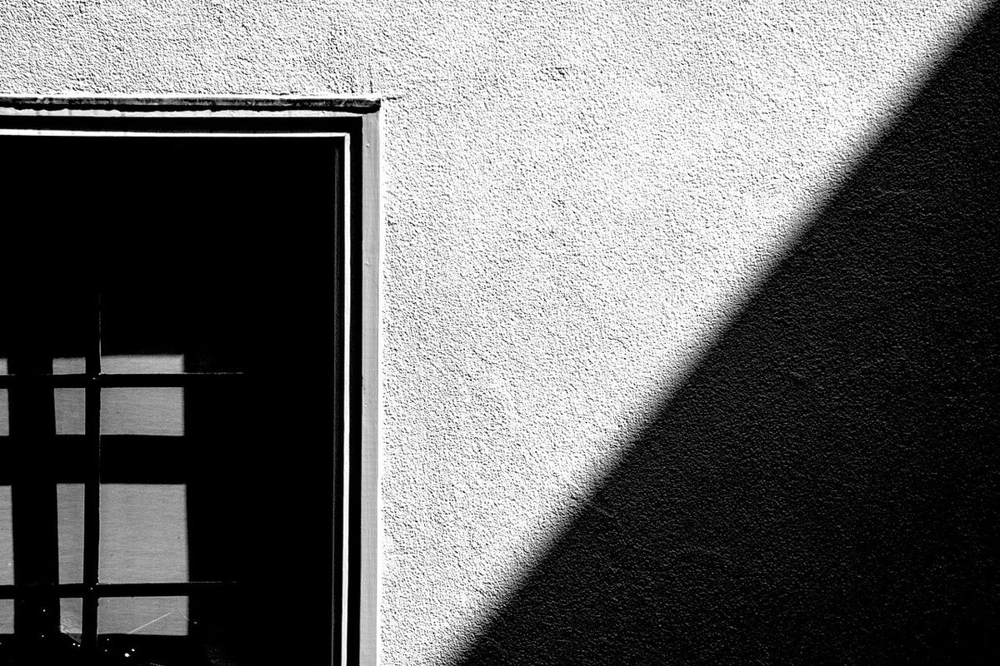
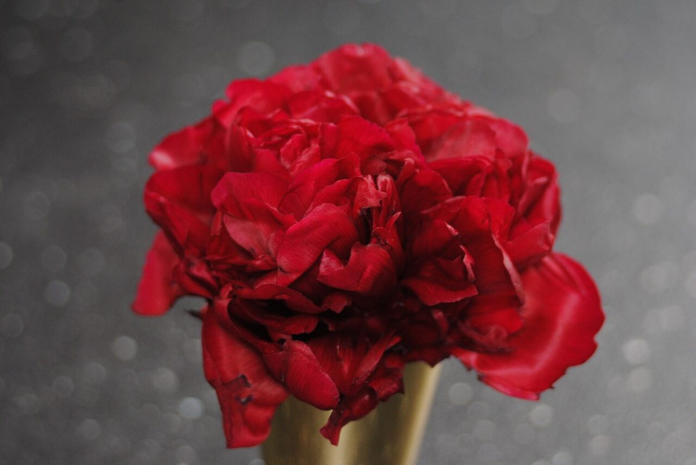

イメージ例急ぐ予定のない午後に、しばらくぼんやりと過ごしました。時間がゆっくり流れていくように感じられました。
制作サンプル
以下は制作側が作成したイメージ例であり、実際のお客様の声ではありません。
実際の声が掲載された場合のレイアウトを、イメージ例でご確認いただくためのページです。

イメージ例急ぐ予定のない午後に、しばらくぼんやりと過ごしました。時間がゆっくり流れていくように感じられました。

イメージ例全体の雰囲気が落ち着いていて、過ごすうちに気持ちが静まるようでした。
ひとりで訪れても気兼ねなく過ごせそうな雰囲気で、本を読んだり、ぼんやりしたりする時間にちょうどよいと感じました。
実際のお客様の声は、お店の運営状況を確認のうえ、あらためて掲載をご相談します。それまでは、お店の最新の様子をInstagramでご覧ください。

写真はフリー素材のイメージです。実際の店内・商品とは異なります。撮影地は店舗周辺とは限らず、他地域・海外で撮影されたものや撮影地不明のものを含みます。